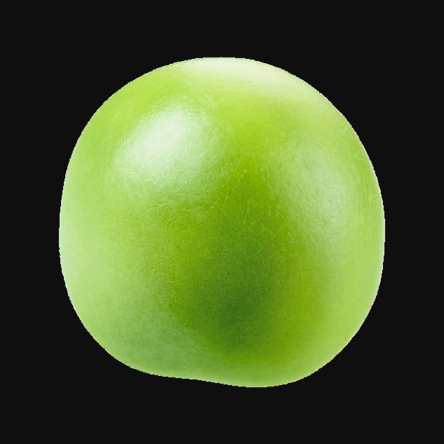

JavaScript-PacMan 2.6



| New Game | ||
|
| New Game |
|
||||||
|
|
|
About JavaScript-PacMan 2"JavaScript-PacMan 2" is another step in the evolution of the famous "JavaScript-PacMan". This game is written in pure JavaScript and doesn't require any plug-ins or other extensions. If Flash-Player 9.0 or higher is detected, an additional Flash-movie is used to provide the sounds. The use of sound may affect the animation speed of the game. "JavaScript-PacMan" was originally designed as a demo-page for an advanced employment of JavaScript animation techniques. The first version (for Netscape Navigator 3.0) was published in late 1996/Jan.1997 and might well have been the first arcade style game on the web implemented in JavaScript only! How to PlayAnyone who doesn't know Pac-Man? Really? O.K. – That's how to play: Guide the Pac-Man, the munching yellow ball, through the maze and eat all the food, the little white dots laid out all around the passages. But be aware of the ghosts: they will give their best to pursue and catch you. (The ghosts will become more intelligent and dangerous in higher levels.) A propos scoring: You will collect an extra live for every 10000 points (but you may not have more than five lives in stock). Moving / ControlsUse the cursor keys or the numeric keypad to navigate the pac-man. You may also use the following keys:
Other controls:
Touch Screens / Mouse ControlControl the pac-man by strokes (mouse gestures) at the maze:
Levels and LayoutsThere are 3 sets of maze-layouts with 5 different levels each.
Finally there's the unique random maze generator, which provides an unlimited number of different mazes for endless fun and varying game play. Random levels will be generated on the fly when you successfully cleared the last designed level of a set. You may also choose "Random Levels" from the "Mazes" menu to start with random generated levels just from the beginning. Sound IntegrationA tiny Adobe Flash movie (swf-file) is used as a simple sound player in case that Flash Player 9.0 or higher is detected. This provides a robust cross-browser sound integration in absence of any real world standard for sound integration and scripted sound control. Flash is not used for any other purpose – the game works just the same without the Flash plug-in. (Even the volume control is implemented in DHTML, just for the fun of it.) Pac-Man TriviaThe original Pac-Man arcade game (which differs in some ways from this game) was first released by Namco (licensed and distributed in the U.S. by Midway) in 1980. The game was originally named "Puck-Man" (from paku paku – Japanese slang describing the motion of an opening and closing mouth while eating), and was renamed to conform to the North American market. Eventually Pac-Man became the most successful video game ever, causing even a coin shortage in Japan. It is listed as the all time number one at the "Top 100 Videogames" of the Killer List of Videogames. One of the most important off-springs was Ms. Pac-Man (released 1981 by Midway/GCC, later Namco). While the original Pac-Man featured a single maze and deterministic ghost movements, Ms. Pac-Man introduced changing mazes and some random to the ghosts in favor for a more varying game play. CopyrightAll scripts and images: © 1996-2011 N. Landsteiner, mass:werk – media environments All rights reserved. No copying or publication without the author's written permission. Version HistoryJavaScript-PacMan vers. 2.5 released Sept. 20011. Added another set of levels: "Hacker Levels" (June. 2008) New features of JavaScript-PacMan vers. 2 (Dec. 2007):
Previous versions and updates:
see also:
| ||||||||||||||||||||||||||||||||||||||||||